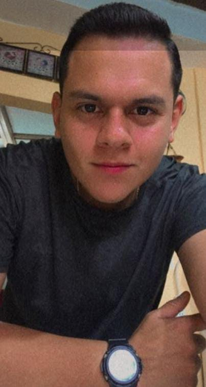

Keneth Pérez
Traducciones legales

La empresa “TraduccionesSV” se dedica a proporcionar traducciones del español a inglés y viceversa de forma correcta. Ofrecemos un servicio profesional de traducción al mercado nacional y regional de forma online. Priorizamos a nuestros clientes con un servicio de traducción de alta calidad basado en las habilidades profesionales de nuestro personal altamente calificado en diversos temas jurídicos, científicos, literarios y más. Nuestro equipo se conforma de seis integrantes: Elizabeth Guillen, Gustavo Solorzano, Adriana Rivas, Carla Jovel, Keneth Pérez y Christian Barillas. Este proyecto nació de nuestro deseo por fomentar más el idioma extranjero además de proveer trabajo de calidad y satisfacer las necesidades de nuestros clientes.
Proporcionar servicios de traducción online confiables y de alta calidad en los campos jurídico, científico y literario, superando las expectativas de nuestros clientes y estableciendo estándares de excelencia en la industria.
Satisfacer las necesidades de traducción de nuestros clientes en los campos jurídico, científico y literario, ofreciendo traducciones precisas, coherentes y culturalmente adecuadas. Utilizar tecnologías de traducción avanzadas para mejorar la eficiencia y la calidad de nuestros servicios. Mantener una comunicación clara y constante con nuestros clientes para entender y cumplir con sus requisitos específicos.
Ser reconocidos como el proveedor líder de servicios de traducción online en español e inglés, destacándonos por nuestra precisión, confiabilidad y excelencia en los campos jurídico, científico y literario.
Calidad y precisión: Nos esforzamos por brindar traducciones precisas y de alta calidad que reflejen la intención y el mensaje original del texto, manteniendo la coherencia terminológica y cultural.
Confianza y confidencialidad: Valoramos la confianza de nuestros clientes y nos comprometemos a mantener la confidencialidad absoluta de los documentos y datos proporcionados.
Orientación al cliente: Nos enfocamos en entender y satisfacer las necesidades específicas de nuestros clientes, brindándoles un servicio personalizado y adaptado a sus requisitos.
Traducciones legales
Traducciones literarias

Traducciones científicas
Traducciones científicas
Traducciones de videojuegos y tecnológicas
Traducciones de videojuegos y tecnológicas